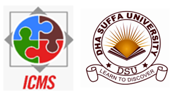

THE POWER PROJECT
MANAGEMENT
Helps Talent Management,
focus on performance,
managing accountability and
responsibilities at every
level.
Remote Advisory And Consulting
For Business Advancement In New Normal Of Present Time
The borderless services are available to business and industries for expert inputs, guidance, second opinion on solution for an issue and management help to make advancement with confidence
Broad line Topics
- a) Strategic Project Managemen
- b) OPM-Organizational Project Management Systems [Results-driven Management]
- c) Alignment of Endeavors with the Business Strategy
- d) Diagnostic Assessment of Gaps in Strategy and Implementation
- e) Construction Project Management
- f) Construction Contract and Claim Management
- g) Assessment of Corporate Training
Practitioner of Strategic Project Management
He is practitioner of “Strategic project management” having the realization that projects are initiated to achieve business results and organizational project management approach should be better aligned with the higher-level enterprise strategy.
Organizational Project Management [OPM] helps linking portfolio, program and project management principles and practices and organizational enablers like – structural, cultural, technological and human resource practices supporting the strategic advancement. It is globally recognized a 21st Century Management Concept for advancing in strategic direction with high performance, high productivity, and sustainable
growth
- His areas of support are noted following;
- a) Cultural design and managing a good fit for teams to achieve high performance and productivity at workplace
- b) Strategic advancement with setting up portfolio for a business goal comprising programs, projects and controlling through PMO
- c) Transformational endeavors of managing gaps in strategy and implementation
- d) Enjoy coaching and mentoring the leaders for high performance
With over 50 years on projects, in various industries and global locations, he offers perspectives, new mindsets, and wisdom to overcome hurdles in your project, and business needs like
- 1. Establishing a PMO? Find out what benefits you want the PMO to deliver
- 2. Understanding how to save a troubled project? Do a healthcheck and get recommendations within a week.
- 3. Finding more options to solve a problem? Invest in divergent thinking, get out of dichotomies.
- 4. Developing a purpose, strategy and make it happen? Be coached on how to engage your employees to become champions of your business transformation
- 5. Looking at the human side of projects, business and other networks?
- 6. Understanding how to influence culture and behaviours, how to establish trust and increase collaboration and performance.
- 7. Becoming more resilient and wiser? Get mentored to reflect on your strength and to develop your 10 features of wisdom.
Empowering the organizations with the power of project management for managing business with enhanced capabilities for fast decision making and managing human aspects.

"Competence
Building of
Businesses and
Industries to
Move in a
Strategic Direction"
Training Programs"
- a) DHA SUFFA University, Karachi
- b) Syscom International Pvt., Ltd. Islamabad
"Presentation - Moving Business from Just Surviving to
Thriving"
Vision
Business success is achieved with Project management skills and certifications that are pursued through talent management and competence building of an organization for advancement in strategic direction and sustainable growth under perpetual disruption.
Mission
Promotion of awareness of the strengths of project management concepts for adaptation by professionals, business and industry for making way forward in disrupting business environment
Our Value
- Work on High Moral Ground
- Respect for Human aspect
- Create Coherence
- Enhance Inter-relationship in Team
Builds Organizational Competence for Sustainable Excellence


.png)